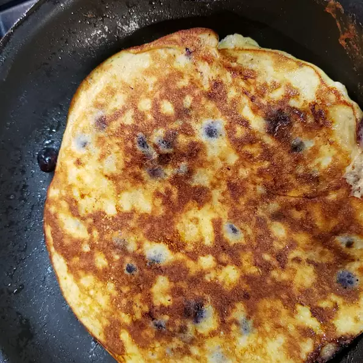

Pancakes

Description
Delicious, simple, banana pancakes. Will give your tongue absolute joy. Serves 2.
Ingredients
- 1 large ripe banana
- 2 eggs
- ⅛ teaspoon baking powder
- 1 pinch ground cinnamon (Optional)
- 2 teaspoons butter, or as needed
Steps
- Mash banana in a bowl using a fork; add eggs, baking powder, and cinnamon and mix batter well.
- Heat butter in a skillet over medium heat. Spoon batter into the hot butter and cook until bubbles form and the edges are dry, 2 to 3 minutes. Flip and cook until browned on the other side, 2 to 3 minutes. Repeat with remaining batter.